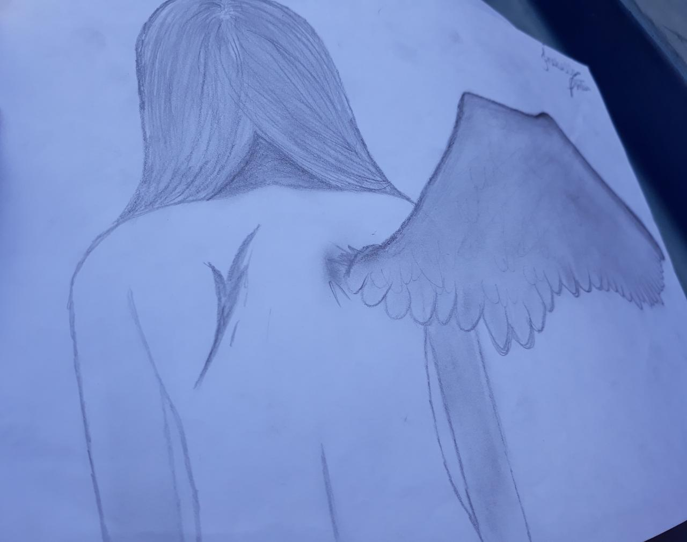
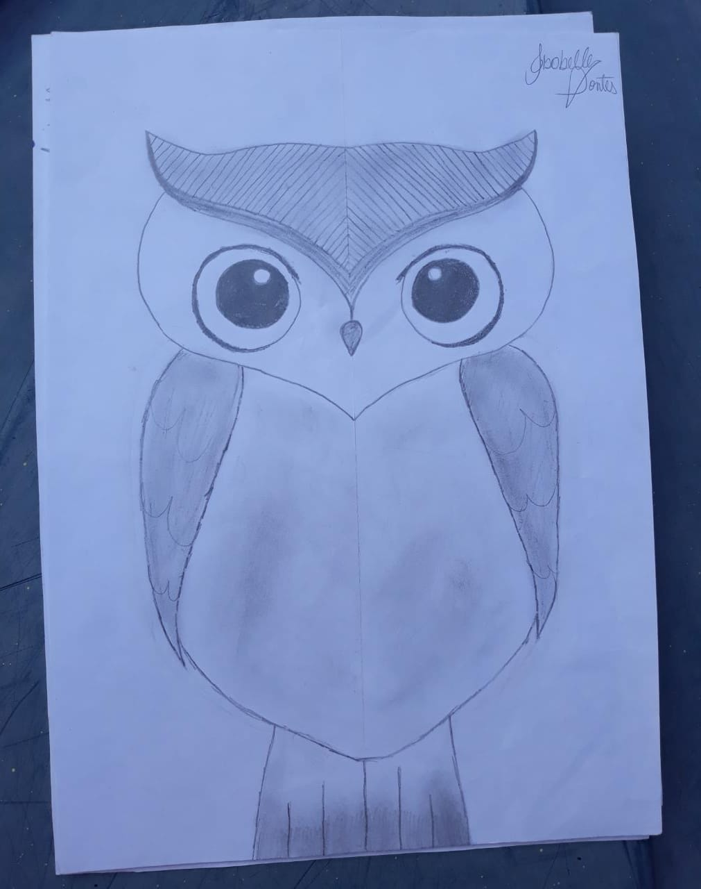

Meus hobbies
Bom, chegamos em uma parte delicada da minha pessoa, pois eu sou bem insegura com o que eu faço, mas muitas pessoas elogiam o que me incentiva e me traz uma certa confiança.
Desenhos
 
Esses sao alguns desenhos que eu acho que estao relativamentes bons!
Dança
Esse e um lado meio obscuro meu. Mas a dança me ajuda a relaxar e esquecer um pouco dos problemas da vida!
Canto
Tambem nao e algo que eu tenho uma grande seguranca, mas eu realmente me sinto confortavel quando canto, parece que apenas eu existo naquele momento!